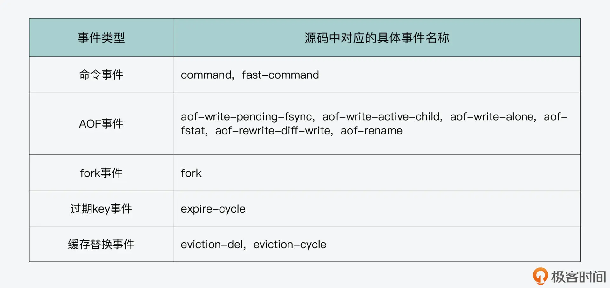

- 00 开篇词 阅读Redis源码能给你带来什么？.md
- 01 带你快速攻略Redis源码的整体架构.md
- 02 键值对中字符串的实现，用char还是结构体？.md
- 03 如何实现一个性能优异的Hash表？.md
- 04 内存友好的数据结构该如何细化设计？.md
- 05 有序集合为何能同时支持点查询和范围查询？.md
- 06 从ziplist到quicklist，再到listpack的启发.md
- 07 为什么Stream使用了Radix Tree？.md
- 08 Redis server启动后会做哪些操作？.md
- 09 Redis事件驱动框架（上）：何时使用select、poll、epoll？.md
- 10 Redis事件驱动框架（中）：Redis实现了Reactor模型吗？.md
- 11 Redis事件驱动框架（下）：Redis有哪些事件？.md
- 12 Redis真的是单线程吗？.md
- 13 Redis 6.0多IO线程的效率提高了吗？.md
- 14 从代码实现看分布式锁的原子性保证.md
- 15 为什么LRU算法原理和代码实现不一样？.md
- 16 LFU算法和其他算法相比有优势吗？.md
- 17 Lazy Free会影响缓存替换吗？.md
- 18 如何生成和解读RDB文件？.md
- 19 AOF重写（上）：触发时机与重写的影响.md
- 20 AOF重写（下）：重写时的新写操作记录在哪里？.md
- 21 主从复制：基于状态机的设计与实现.md
- 22 哨兵也和Redis实例一样初始化吗？.md
- 23 从哨兵Leader选举学习Raft协议实现（上）.md
- 24 从哨兵Leader选举学习Raft协议实现（下）.md
- 25 PubSub在主从故障切换时是如何发挥作用的？.md
- 26 从Ping-Pong消息学习Gossip协议的实现.md
- 27 从MOVED、ASK看集群节点如何处理命令？.md
- 28 Redis Cluster数据迁移会阻塞吗？.md
- 29 如何正确实现循环缓冲区？.md
- 30 如何在系统中实现延迟监控？.md
- 31 从Module的实现学习动态扩展功能.md
- 32 如何在一个系统中实现单元测试？.md
- 结束语 Redis源码阅读，让我们从新开始.md
30 如何在系统中实现延迟监控？
我们知道，Redis 的一个显著特征就是能提供低延迟的数据访问。而如果 Redis 在运行过程中变慢了，我们就需要有方法能监控到哪些命令执行变慢了。更进一步的需求，就是我们需要有方法监控到，是 Redis 运行过程中的哪些事件导致 Redis 变慢了。这样一来，我们就既可以检查这些慢命令，分析它们的操作类型和访问的数据量，进而提出应对方法，也可以检查监控记录的事件，分析事件发生的原因并提出应对方法。
那么，为了满足这些需求，我们就需要有一套监控框架，一方面能监测导致 Redis 变慢的事件，另一方面，能监控并记录变慢的命令。其实，这也是我们在开发后端系统时，经常会面临的一个运维开发需求，也就是如何监控后端系统的运行状态。
今天这节课，我就来带你了解 Redis 的延迟监控框架和慢命令日志的设计与实现。掌握今天的课程内容后，一方面，你可以把这套监控框架应用到实际的业务，而另一方面，你也可以参考 Redis 的实现，给自己的系统增加延迟监控功能。
下面，我们就先来看下 Redis 实现的延迟监控框架。
延迟监控框架的实现
实际上，Redis 在运行过程中，以下表格中给出的几类事件都会导致 Redis 变慢，我们通常也把这些事件称为延迟事件。你可以参考表格中的这些事件类型，以及它们在源码中对应的事件名称。

那么针对这些事件，Redis 实现了延迟监控框架，通过采样的方式来记录它们的执行情况。当需要排查问题时，延迟监控框架提供了 latency history 命令，以便运维人员检查这些事件。
下面，我们就来看下记录事件执行情况的数据结构。因为延迟监控框架是在latency.h和latency.c文件中实现的，你也可以在这两个文件中找到相应的数据结构和函数。
记录事件执行情况的数据结构
首先，Redis 是使用了 latencySample 结构体，来记录延迟事件的采样时间和事件的实际执行时长，这个结构体的代码如下所示：
struct latencySample {
int32_t time; //事件的采样时间
uint32_t latency; //事件的执行时长（以毫秒为单位）
};
而在 latencySample 这个结构体基础上，Redis 又设计了 latencyTimeSeries 结构体，这个结构体使用了一个 latencySample 类型的数组，记录了针对某一类事件的一系列采样结果，这样就可以为分析 Redis 变慢提供更多的事件信息。
struct latencyTimeSeries {
int idx; //采样事件数组的写入位置
uint32_t max; //当前事件的最大延迟
struct latencySample samples[LATENCY_TS_LEN]; //采样事件数组，记录LATENCY_TS_LEN个采样结果，LATENCY_TS_LEN默认为160
};
另外，也因为延迟监控框架要记录的延迟事件有很多种，所以 Redis 还进一步设计了一个哈希表 latency_events，作为全局变量 server 的一个成员变量，用来记录不同事件的采样结果数组，如下所示：
struct redisServer {
…
dict *latency_events;
…
}
这个哈希表是在 Redis server 启动初始化的函数 initServer 中，通过调用 latencyMonitorInit 函数来完成创建的，如下所示：
void initServer(void) {
…
latencyMonitorInit();
}
void latencyMonitorInit(void) {
server.latency_events = dictCreate(&latencyTimeSeriesDictType,NULL);
}
好，了解了记录延迟事件的数据结构和初始化操作后，我们再来看下事件采样是如何实现的。
如何实现延迟事件的采样？
延迟事件的采样函数是 latencyAddSample，它的函数原型如下所示。它的参数中包含了要记录的事件名称，这实际是对应了 latency_events 哈希表中的一个哈希项。此外，它的参数中还包括该事件的执行时长。
void latencyAddSample(char *event, mstime_t latency)
latencyAddSample 函数的执行逻辑并不复杂，主要可以分成三步。
首先，它会根据传入的事件名称，在 latency_events 哈希表中查找该事件。如果该事件对应的哈希项还不存在，它就会在哈希表中加入该事件，如下所示：
//查找事件对应的哈希项
struct latencyTimeSeries *ts = dictFetchValue(server.latency_events,event);
…
if (ts == NULL) { //如果哈希项为空，就新建哈希项
ts = zmalloc(sizeof(*ts));
ts->idx = 0;
ts->max = 0;
memset(ts->samples,0,sizeof(ts->samples));
dictAdd(server.latency_events,zstrdup(event),ts); //在哈希表中插入哈希项
}
然后，latencyAddSample 函数会根据传入的事件执行时间，更新当前记录的该类事件的最大执行时间，如下所示：
if (latency > ts->max) ts->max = latency;
最后，latencyAddSample 函数会实际记录当前的采样结果。
不过在这一步，如果它发现当前的采样结果，和前一个采样结果是在同一秒中获得的，并且如果当前采样结果的事件执行时长，大于前一个采样结果的话，那么 latencyAddSample 函数就会直接更新前一个采样结果中记录的执行时长了，而不是新插入一个采样结果。
否则的话，latencyAddSample 函数才会新插入一个采样结果。这样设计的目的，也是为了避免在同一秒中记录过多的采样结果。
下面的代码展示了 latencyAddSample 函数实际记录采样结果的逻辑，你可以看下。
//获得同类事件的前一个采样结果
prev = (ts->idx + LATENCY_TS_LEN - 1) % LATENCY_TS_LEN;
if (ts->samples[prev].time == now) { //如果当前和前一个采样结果在同一秒中
if (latency > ts->samples[prev].latency) //如果当前采用结果的执行时长大于前一个采样结果
ts->samples[prev].latency = latency; //直接更新前一个采样结果的执行时长
return;
}
//否则，新插入当前的采样结果
ts->samples[ts->idx].time = time(NULL);
ts->samples[ts->idx].latency = latency;
而在这里，你也要注意一点，就是 latencyAddSample 函数在记录采样结果时，会重复使用采样结果数组 latencyTimeSeries。所以，如果采样结果数量超过数组默认大小时，旧的采样结果是会被覆盖掉的。如果你要记录更多的采样结果，就需要扩大 latencyTimeSeries 数组的长度。
那么，latencyAddSample 函数是在什么时候调用进行采样的呢?
其实，latencyAddSample 函数是被封装在了 latencyAddSampleIfNeeded 函数中。在 latencyAddSampleIfNeeded 函数中，它只会在事件执行时长超过 latency-monitor-threshold 配置项的值时，才调用 latencyAddSample 函数记录采样结果。你可以看看下面给出的 latencyAddSampleIfNeeded 函数定义。
#define latencyAddSampleIfNeeded(event,var) \
if (server.latency_monitor_threshold && \
(var) >= server.latency_monitor_threshold) \
latencyAddSample((event),(var));
而 latencyAddSampleIfNeeded 函数，实际上会在刚才介绍的延迟事件发生时被调用。这里我来给你举两个例子。
比如，当 Redis 命令通过 call 函数（在 server.c 文件中）执行时，call 函数就会调用 latencyAddSampleIfNeeded 函数进行采样，如下所示：
if (flags & CMD_CALL_SLOWLOG && c->cmd->proc != execCommand) {
//根据命令数据结构中flags的CMD_FAST标记，决定当前是fast-command事件还是command事件
char *latency_event = (c->cmd->flags & CMD_FAST) ?
"fast-command" : "command";
latencyAddSampleIfNeeded(latency_event,duration/1000);
…
}
再比如，当 Redis 调用 flushAppendOnlyFile 函数写 AOF 文件时，如果 AOF 文件刷盘的配置项是 AOF_FSYNC_ALWAYS，那么 flushAppendOnlyFile 函数就会调用 latencyAddSampleIfNeeded 函数，记录 aof-fsync-always 延迟事件的采样结果，如下所示：
void flushAppendOnlyFile(int force) {
…
if (server.aof_fsync == AOF_FSYNC_ALWAYS) {
latencyStartMonitor(latency); //调用latencyStartMonitor函数开始计时
redis_fsync(server.aof_fd); //实际将数据写入磁盘
latencyEndMonitor(latency); //调用latencyEndMonitor结束计时，并计算时长
latencyAddSampleIfNeeded("aof-fsync-always",latency);
…}
}
那么在这里，你需要注意的是，Redis 源码在调用 latencyAddSampleIfNeeded 函数记录采样结果时，经常会在延迟事件执行前，调用 latencyStartMonitor 函数开始计时，并在事件执行结束后，调用 latencyEndMonitor 函数结束计时和计算事件执行时长。
此外，你也可以在阅读 Redis 源码的工具中，比如 sublime、sourceinsight 等，通过查找函数关系调用，找到 latencyAddSampleIfNeeded 函数被调用的其他地方。
好了，到这里，Redis 延迟监控框架就能通过 latencyAddSampleIfNeeded 函数，来记录延迟事件的采样结果了。而实际上，Redis 延迟监控框架还实现了延迟分析，并能提供应对延迟变慢的建议，我们再来看下。
延迟分析和提供应对措施建议
首先，Redis 是提供了 latency doctor 命令，来给出延迟分析结果和应对方法建议的。当我们执行这条命令的时候，Redis 就会使用 latencyCommand 函数来处理。而在处理这个命令时，latencyCommand 函数会调用 createLatencyReport 函数，来生成延迟分析报告和应对方法建议。
具体来说，createLatencyReport 函数会针对 latency_events 哈希表中记录的每一类事件，先调用 analyzeLatencyForEvent 函数，计算获得采样的延迟事件执行时长的均值、最大 / 最小值等统计结果。具体的统计计算过程，你可以仔细阅读下 analyzeLatencyForEvent 函数的源码。
然后，createLatencyReport 函数会针对这类事件，结合 Redis 配置项等信息给出应对措施。
其实，在 createLatencyReport 函数中，它定义了多个 int 变量，当这些变量的值为 1 时，就表示建议 Redis 使用者采用一种应对高延迟的措施。我在下面的代码中展示了部分应对措施对应的变量，你可以看下。另外你也可以阅读 createLatencyReport 函数源码，去了解所有的措施。
sds createLatencyReport(void) {
…
int advise_slowlog_enabled = 0; //建议启用slowlog
int advise_slowlog_tuning = 0; //建议重新配置slowlog阈值
int advise_slowlog_inspect = 0; //建议检查slowlog结果
int advise_disk_contention = 0; //建议减少磁盘竞争
…
}
我们也来简单举个例子。比如说，针对 command 事件，createLatencyReport 函数就会根据 slowlog 的设置情况，给出启用 slowlog、调整 slowlog 阈值、检查 slowlog 日志结果和避免使用 bigkey 的应对建议。这部分代码如下所示：
if (!strcasecmp(event,"command")) {
//如果没有启用slowlog，则建议启用slowlog
if (server.slowlog_log_slower_than < 0) {
advise_slowlog_enabled = 1;
advices++;
} //如果slowlog使用的命令时长阈值太大，建议调整slowlog阈值
else if (server.slowlog_log_slower_than/1000 >
server.latency_monitor_threshold)
{
advise_slowlog_tuning = 1;
advices++;
}
advise_slowlog_inspect = 1; //建议检查slowlog结果
advise_large_objects = 1; //建议避免使用bigkey
advices += 2;
}
所以，像 createLatencyReport 函数这样在计算延迟统计结果的同时，也给出应对措施的设计就很不错，这也是从 Redis 开发者的角度给出的建议，它更具有针对性。
好了，到这里，我们就了解了延迟监控框架的实现。接下来，我们再来学习下 Redis 中慢命令日志的实现。
慢命令日志的实现
Redis 是使用了一个较为简单的方法来记录慢命令日志，也就是用一个列表，把执行时间超出慢命令日志执行时间阈值的命令记录下来。
在 Redis 全局变量 server 对应的数据结构 redisServer 中，有一个 list 类型的成员变量 slowlog，它就是用来记录慢命令日志的列表的，如下所示：
struct redisServer {
…
list *slowlog;
…}
而实现慢命令日志记录功能的代码是在slowlog.c文件中。这里的主要函数是 slowlogPushEntryIfNeeded，它的原型如下所示：
void slowlogPushEntryIfNeeded(client *c, robj **argv, int argc, long long duration)
从代码中你可以看到，这个函数的参数包含了当前执行命令及其参数 argv，以及当前命令的执行时长 duration。
这个函数的逻辑也不复杂，它会判断当前命令的执行时长 duration，是否大于 redis.conf 配置文件中的慢命令日志阈值 slowlog-log-slower-than。如果大于的话，它就会调用 slowlogCreateEntry 函数，为这条命令创建一条慢命令日志项，并调用 listAddNodeHeader 函数，把这条日志项加入到日志列表头，如下所示：
//当前命令的执行时长是否大于配置项
if (duration >= server.slowlog_log_slower_than)
listAddNodeHead(server.slowlog, slowlogCreateEntry(c,argv,argc,duration));
当然，如果日志列表中记录了太多日志项，它消耗的内存资源也会增加。所以 slowlogPushEntryIfNeeded 函数在添加日志项时，会判断整个日志列表的长度是否超过配置项 slowlog-max-len。一旦超过了，它就会把列表末尾的日志项删除，如下所示：
//如果日志列表超过阈值长度，就删除列表末尾的日志项
while (listLength(server.slowlog) > server.slowlog_max_len)
listDelNode(server.slowlog,listLast(server.slowlog));
现在，我们也就了解了记录慢命令日志项的主要函数，slowlogPushEntryIfNeeded 的基本逻辑了。然后我们再来看下，它在记录日志项时调用的 slowlogCreateEntry 函数。
这个函数是用来创建一个慢命令日志项。慢命令日志项的数据结构是 slowlogEntry，如下所示：
typedef struct slowlogEntry {
robj **argv; //日志项对应的命令及参数
int argc; //日志项对应的命令及参数个数
long long id; //日志项的唯一ID
long long duration; //日志项对应命令的执行时长（以微秒为单位）
time_t time; //日志项对应命令的执行时间戳
sds cname; //日志项对应命令的发送客户端名称
sds peerid; //日志项对应命令的发送客户端网络地址
} slowlogEntry;
从 slowLogEntry 的定义中，你可以看到，它会把慢命令及其参数，以及发送命令的客户端网络地址记录下来。这样设计的好处是，当我们分析慢命令日志时，就可以直接看到慢命令本身及其参数了，而且可以知道发送命令的客户端信息。而这些信息，就有利于我们排查慢命令的起因和来源。
比如说，如果我们发现日志中记录的命令参数非常多，那么它就可能是一条操作 bigkey 的命令。
当然，考虑到内存资源有限，slowlogCreateEntry 函数在创建慢命令日志项时，也会判断命令参数个数。如果命令参数个数，超出了阈值 SLOWLOG_ENTRY_MAX_ARGC 这个宏定义的大小（默认 32）时，它就不会记录超出阈值的参数了，而是记录下剩余的参数个数。这样一来，慢命令日志项中就既记录了部分命令参数，有助于排查问题，也避免了记录过多参数，占用过多内存。
下面的代码展示了 slowlogCreateEntry 的基本执行逻辑，你可以看下。
slowlogEntry *slowlogCreateEntry(client *c, robj **argv, int argc, long long duration) {
slowlogEntry *se = zmalloc(sizeof(*se)); //分配日志项空间
int j, slargc = argc; //待记录的参数个数，默认为当前命令的参数个数
//如果当前命令参数个数超出阈值，则只记录阈值个数的参数
if (slargc > SLOWLOG_ENTRY_MAX_ARGC) slargc = SLOWLOG_ENTRY_MAX_ARGC;
se->argc = slargc;
…
for (j = 0; j < slargc; j++) { //逐一记录命令及参数
if (slargc != argc && j == slargc-1) { //如果命令参数个数超出阈值，使用最后一个参数记录当前命令实际剩余的参数个数
se->argv[j] = createObject(OBJ_STRING,
sdscatprintf(sdsempty(),"... (%d more arguments)",
argc-slargc+1));
} else {
… //将命令参数填充到日志项中
}}
… //将命令执行时长、客户端地址等信息填充到日志项中
}
好了，到这里，你就了解了慢命令日志的实现。最后，你也要注意，慢命令日志只会记录超出执行时长阈值的命令信息，而不会像延迟监控框架那样记录多种事件。所以，记录日志的函数 slowlogPushEntryIfNeeded，只会在命令执行函数 call（在 server.c 文件中）中被调用，如下所示：
void call(client *c, int flags) {
…
start = server.ustime; //命令执行前计时
c->cmd->proc(c); //命令实际执行
duration = ustime()-start; //命令执行完成计算耗时
…
if (flags & CMD_CALL_SLOWLOG && c->cmd->proc != execCommand) {
…
//调用slowlogPushEntryIfNeeded函数记录慢命令
slowlogPushEntryIfNeeded(c,c->argv,c->argc,duration);
}
…}
小结
今天这节课，我给你介绍了 Redis 实现的延迟监控框架和慢命令日志。你要知道，Redis 源码会针对可能导致 Redis 运行变慢的五类事件，在它们执行时进行采样。而一旦这些事件的执行时长超过阈值时，监控框架就会将采样结果记录下来，以便后续分析使用。这种针对延迟事件进行采样记录的监控方法，其实是很值得我们学习的。
而慢命令日志的实现则较为简单，就是针对运行时长超出阈值的命令，使用一个列表把它们记录下来，这里面包括了命令及参数，以及发送命令的客户端信息，这样可以方便运维人员查看分析。
当然，Redis 源码中实现的延迟监控框架主要是关注导致延迟增加的事件，它记录的延迟事件，也是和 Redis 运行过程中可能会导致运行变慢的操作紧耦合的。此外，Redis 的 INFO 命令也提供了 Redis 运行时的监控信息，不过你要知道，INFO 命令的实现，主要是在全局变量 server 的成员变量中，用来记录 Redis 实例的实时运行状态或是资源使用情况的。
每课一问
Redis 在命令执行的 call 函数中，为什么不会针对 EXEC 命令，调用 slowlogPushEntryIfNeeded 函数记录慢命令呢？
© 2019 - 2023 Liangliang Lee. Powered by gin and hexo-theme-book.